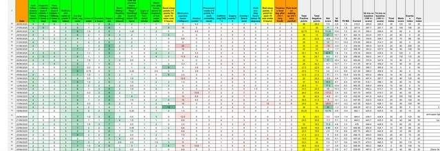
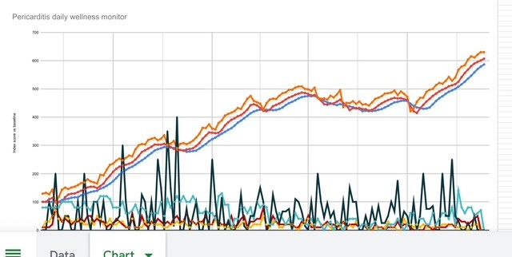

Monthnotes August: Pericarditis recovery journey
How are you Tom?
Well, it has been over two months since my last monthnote. There has been a lot going on, in and out of work, it has been hard to find time to reflect and finish this post which was started 4 weeks ago.
I was overwhelmed by the response to my previous post about my journey through the NHS and ongoing treatment for acute heart problem pericarditis. It was most widely read and shared post I wrote, and I am really thankful to the dozens of friends and colleagues who replied sharing kindness and wishing me a speedy recovery.
Several colleagues also reached out privately, sharing their own health challenges and how they had been through similar experiences of disconnected care journeys in the NHS. It was really great to chat with colleagues and friends around those deeper health issues. After three years focussing on building the NHSE UCD Ops capability, chats like these that help ground me in the importance of the work we do. How our internal tools and services underpin the research quality, and how User-Centred Design is reshaping healthcare creating better outcomes. These struggles through the system have relit energies and motivation as to why I first wanted to join the NHS, now over 10 years ago, to make a difference.
I’m doing a lot better now, but it has been a real stuggle with lows and highs, confusion and false many recoveries. I wrote that last post while going through a particularly frustrating time too.
Learning, experimenting, recovering
Looking back to this March, and the first few weeks after hospitalisation, it was just the start of a huge battle. I had to accept fully that I wasn’t me, I couldn’t do what I normally did every day. I had to learn to cope with full-on-shattering exhaustion, dizzyness, and facing, sadly a long recovery journey.
I started by researched the topic. Created my own holistic recovery plan, coping strategies, alongside ‘the NHS treatment plan’ (aka a metric ton of medicine).
I had to balance difficult choices, worrying about the side affects of the meds, e.g. causing bone density loss and muscle loss, which could lead to significant frailty, so I was keen to keep some exercise going through the treatment. I wanted to understand if the “only rest” and “keep heart rate under 100bpm” was genuine thing, was it a Facebook myth or a health treatment?
I tracked everything, every morning waking up and documenting yesterday. I wanted to know what worked and didn’t work for me.
To experiment:
- how much energy do I have? what were my daily limits? how much sleep do I need?
- how would I balance work, personal life while being exhausted?
- what food stuffs could I cope with? what is the impact of 5, or 10, a day fruit and veg?
- to relearn what exercise my body could or could or could not tolerate.

After two months of tracking and careful experiments, I learnt about what triggers my flare ups, whether certain amounts of exercise, levels of tiredness, and other factors. It seemed whether a flare up would start and how long the flare ups would last, the pain level was directly linked to net of the positive or negative factors in the days around it.
After 3 months, I was expecting to be fully recovered, I started to feel really good and tried coming off all medicine. This worked for a few weeks until I had another big flare up. Due to this set back, treatment was extended to six months and I was sent for the MRI scan as a precaution (see previous post).

Now over 6 months have passed. My heart feels great. Flare ups from some of the triggers has stopped. I am fully-back to exercising, though I still need to track things to check I’m not overdoing it.
I hope to end the medication and get discharged soon, but still being cautious. I should be careful not to generalise, what has worked for may not work for anyone else. I was previously very fit and active, so getting back to fitness may be quicker or slower for other patients. It is very upsetting to read on Facebook of people who have suffered chronically for decades, with little recovery progress.
During August I had a great holiday away in the lake district with family. I had fun days out hiking, mountain biking, lake swimming, canoeing and fell running. I was active nearly every day and felt great throughout*. The weather was baking every day which really helped too.
If I could sum up this month, my floating gem turn back to Green. I hope it stays that way for a little while. On that note, wouldn’t it be really great if people had floating green Sims icons above their head?? Life in general would be much easier rather than asking throwaway questions like “How are you Tom?”

How are things at work?
During this ongoing health battle, I’ve had to significantly reprioritise my workload and focus. There were many projects that I’ve had to put on ice. I’ve changed how I work, trying firstly to empower teams and colleagues to take on more UCD and Re Ops projects. To provide more coaching and training, ahead of just doing it.
This change in approach has helped teams to self-service and meet their needs, as well it also supported collegaues personal development too. However, there are still some colleagues and teams who expect UCD Ops to manage everything for them. I feel their frustration, when colleagues arrive afresh they expect things to be in place. Reality is does take days or weeks to get things sorted. I hope they consider our team is really really tiny and managing over 20 live services - there is only so much we can do.
We are looking to “automate and AI” our way out of some of the resource problems along the ‘no hiring’ stance - more on that in a future post.
Super keen readers will have noticed the * above. Well that is a story for another time too!
Thanks for reading and sharing. And regular reminder (Tom), Take care of yourself!